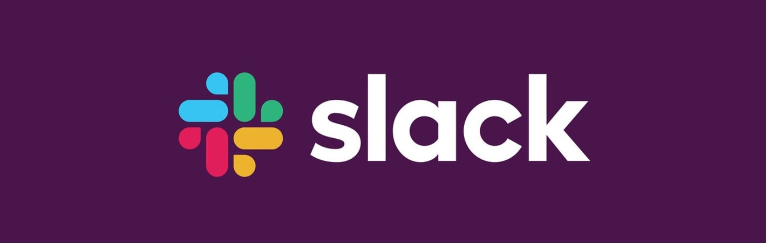

Come and meet us at the NHS ConfedExpo this week. We are presenting live from 2.30pm 15 June & 12pm 16 June 2022 at the AnalystX stand (F5: Digital and Data Transformation), Liverpool ACC.
Promoting open-source in the NHS
Open source is the practice of publishing code of a software project so that anyone can read, modify, re-use, and improve that software.
Developers across the NHS frequently use existing open source packages and modules in their work, as part of the NHS App, for example.
The last eight years has seen a ‘cambrian explosion’ in the use of open-source software. From the first repository published by NHS England in 2014, to over 1,200 today.
Python, R, and web development tools (HTML, css, Ruby, PHP) are the most popular languages used. Source: Open-Source Health Statistics
Why should we open-source our code?
“Public services are built with public money, and so the code they are based on should be made available across the health and care system, and those working with it, to reuse and build on” NHS Digital Service Manual.
Open source means that the NHS can give our work back to the people who fund it, the public: allowing them to more easily join our staff, more quickly develop products and SMEs to support us, and better understand and trust the work we do on their behalf NHS Open-source Policy.
The Transformation Directorate of NHS England (NHSX) has published draft guidance on how to open source your code for health and care organisations with guidance on where to put the code, how to license and what licences to use, how to maintain and case studies of teams who have done this.
The NHS open-source policy will become officially available in Summer 2022
Get Involved in the Communtiy!
The NHS Python Community for Healthcare is open to anyone interested in championing the use of Python, programming, and open code in the NHS and healthcare sector
Open your phone camera to get our details
-

Slack channel
Join us on Slack to chat to the community or ask us your questions.
-

LinkedIn page
Follow our LinkedIn page to be notified about all our future events.
-

YouTube channel
Don't forget to like and subscribe to our YouTube channel.
-
GitHub repository
Fork our repositories on GitHub and use our code.